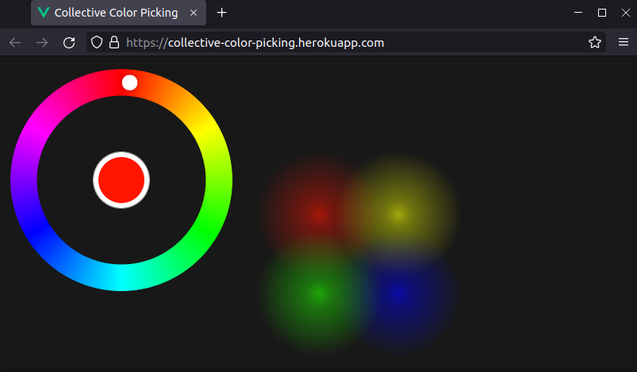

Credit-card-free web application stack for 2022
A no-credit-card way of developing, deploying, and monitoring a web application
Whether its about trying out a new framework or sketching your next big startup idea - its always great to get the code running somewhere. And its even better if you can be sure that you will never be forced to pay anything at all.
Many platforms offer a free-tier for freely using some of their services, sometimes just for a limited period of time, and/or only after presenting a valid credit-card. Furthermore, especially services based on vendor-specific technologies tend to be offered freely.
AWS for example offers one free EC2 compute instance as well as a relational database instance for the first 12 months after the registration. In the “free-forever” offer are vendor-specific technologies such as Lambda-invocations and DynamoDB-storage.
While this obviously makes sense from a marketing perspective, it is not great to get locked into vendor-specific technologies, or to risk financial loss just because of configuration mistakes (or because of security breaches).
This post describes a couple of tools, technologies and services which may be used for developing and operating a full-stack web-application, without the need to show a credit-card anywhere, as of 02/2022. Vendor lock-in’s are avoided as much as possible by aiming to build on established standards.
Sample app
“Collective Color Picking” is a small toy app illustrating the used technologies. It allows users to pick their favorite color and share it with all other connected users in real time. A default color, which is assigned to the first connecting user after application startup, is persisted and can be changed via HTTP.
The app consists of a minimal browser-based frontend, a backend which holds the state (the picked colors of all connected users), and a database which stores the default color.

GitHub repository: https://github.com/fladdimir/collective-color-picking
Sample-App on Heroku: https://collective-color-picking.herokuapp.com
(first request may take some seconds, due to a possibly sleeping Heroku dyno)
Application structure
The app has a standard 3 tier structure.
Client-side:
Vue.js with Typescript, using the cool
radial-color-picker and a canvas to display the picked colors.
Websocket connection for sending and receiving color updates.
Server-side: Quarkus, a growingly popular Java framework with a number of cool features (e.g. dev-mode, native-image compilation), built on JEE standards like CDI, JPA, Bean Validation. Websocket support is available as well. Seamlessly usable with mapstruct, lombok, AssertJ, and others that make Java programming even more fun. PostgresQL, widespread and compatible database, locally runnable e.g. via docker.
For local development, the vite frontend dev-server can proxy incoming requests to a locally running backend.
The actual deployment uses
nginx to serve the static client files and proxies /api requests to the backend.
Tests & CI
Both Vue and Quarkus offer good test support. An especially useful feature is the option to run Quarkus API tests not only against the application running on Java but also against a native-image, which helps to discover problems like missing @RegisterForReflection annotations on DTOs.
Static code analysis tools like sonarqube further help to ensure code quality. Sonarqube analysis can be incorporated into the build via a gradle-plugin, and also supports visualizing the test coverage, which can be obtained by integrating the Quarkus-jacoco-extension.
The test and static analysis can be run e.g. on every push to or PR at a remote repository. git-services like GitHub (actions) and GitLab (pipelines) offer free build time on their runners for public projects.
Analysis and coverage results can then be submitted to
sonarcloud, a sonarqube service which is also freely available for public projects (and offers
shiny badges, too).
Hosting & Deployment
Different to major cloud platforms, Heroku offers not only free compute instances (dynos, 512 MB RAM), but also free standard PostgresQL databases (limited rows, size, connections).
To be able to switch platforms without extensive configuration changes, the application is provided in form of a docker image, which is pushed to the Heroku registry. Database credentials are provided to a started container via an environment variable (which may profit from further pre-processing so that the backend can connect successfully).
The application docker image builds on top of the official nginx image and includes the frontend files and the backend in a single image, which can conveniently be created using a multi-stage docker build, so that no build dependencies need to be included into the final image.
Since free RAM is limited - and to reduce wake-up time after Heroku dynos were put to sleep - compiling the application backend to a native-image can be beneficial. The native-image compilation requires a large amount of memory (~6 GB for the simple app), but luckily the free build runners of GitHub are able to cope with this.
The port on which the application is supposed to listen is also provided by Heroku via environment variable. To tell nginx, the config is generated at runtime from a template with help of envsubst before the start.
On update of a dedicated branch, a corresponding GitHub action automatically builds and deploys the image, also including a health-check request after application update.
Monitoring: Logs & Metrics
For observing the state of a running application, Heroku offers dedicated add-ons for collecting and analyzing logs and a standard metrics collection, which are only available after registering a credit-card.
To circumvent this issue, the app uses a dedicated logging and metrics collection setup. All logs & metrics are sent to a free-tier grafana-cloud instance.
Application logs are sent by nginx and the Quarkus backend via syslog to a local grafana-agent, which forwards them to the grafana-cloud loki log database. Since the grafana-agent receives syslog logs only via TCP, and nginx sends syslog logs via UDP, rsyslog is additionally used for “protocol translation”.
Apart from log-forwarding, the local grafana-agent is also a slimmed-down prometheus in agent mode, which scrapes metrics information from a specified endpoint created by the Quarkus metrics extension (/q/metrics). The scraped metrics are then forwarded to the Prometheus instance of grafana-cloud.
Besides forwarding logs and metrics, the grafana-agent event represents an OTLP trace receiver which can forward traces created by the Quarkus OTLP extension. Grafana-cloud free-tier includes a Tempo tracing backend.
The grafana-cloud connection credentials are also provided via environment variables.
The observability backend including grafana components can be setup locally, e.g. using docker-compose, so that the complete setup can be tested locally which is especially important due to the amount of involved configuration.